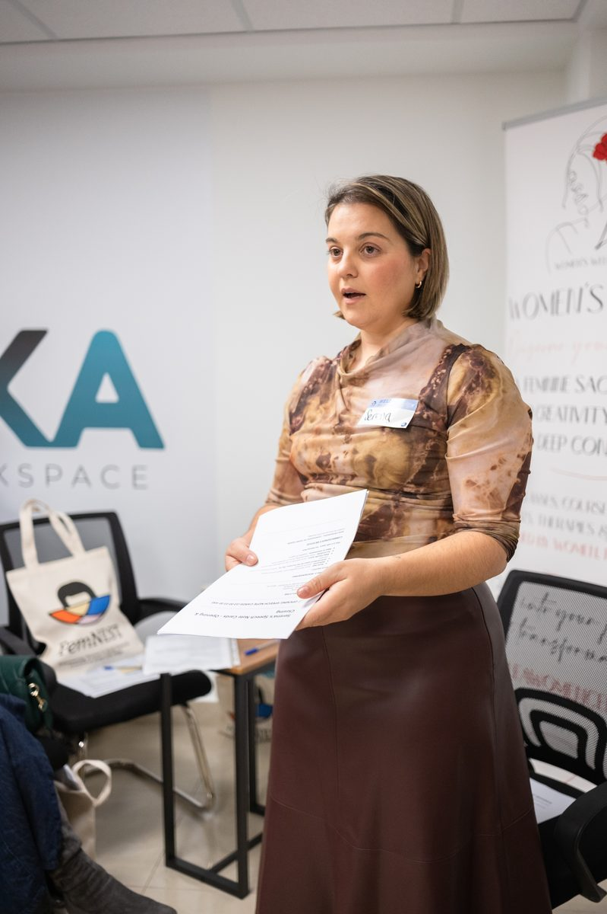
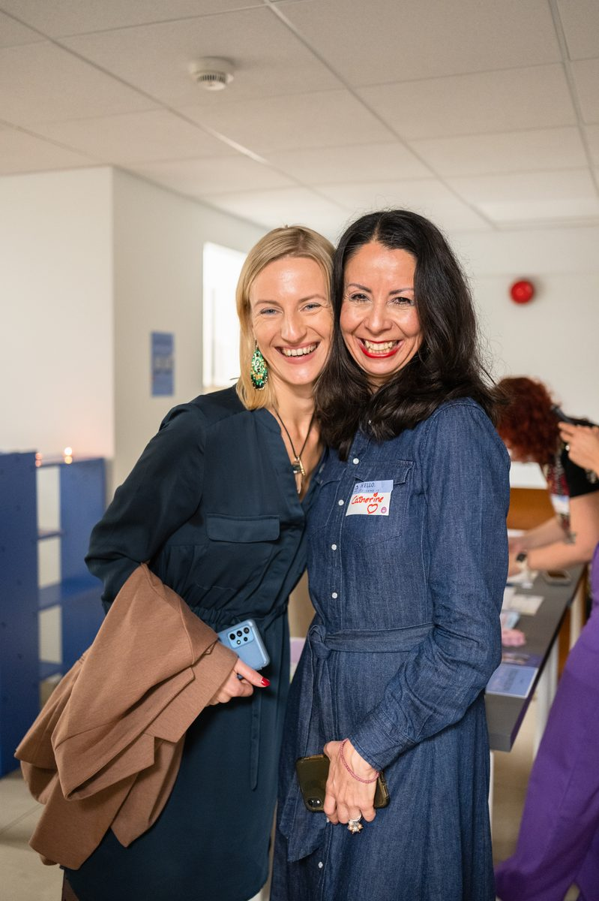
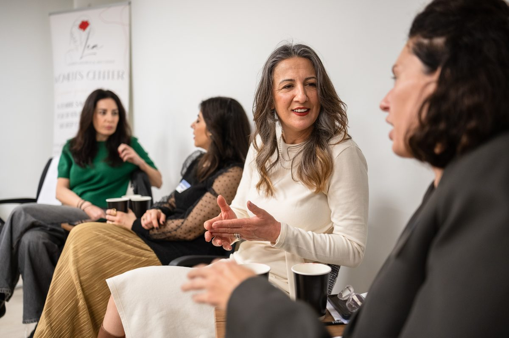
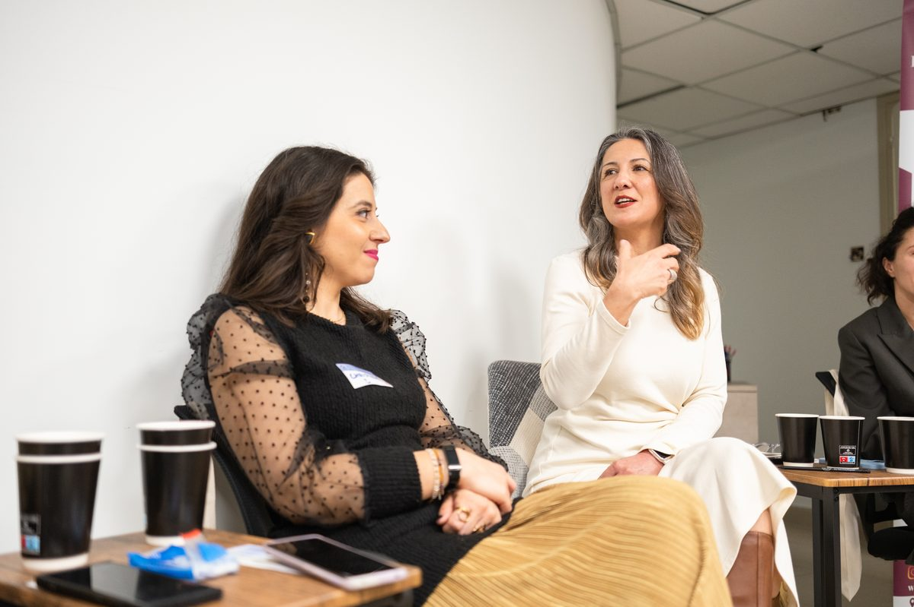
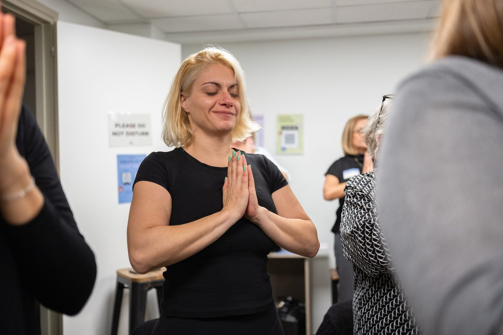
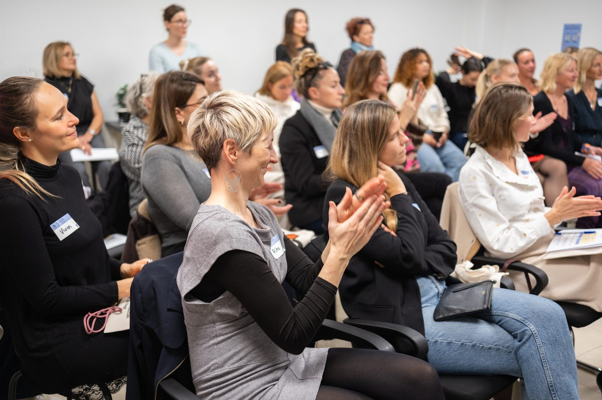

Financial freedom for women — mapped to the moments that matter
FemNEST maps 50+ female health and life transitions to their financial outcomes — so individuals, employers, and partners can act on what matters most, instead of guessing.
What is FemNEST
FemNEST is the first platform mapping women's health and life transitions — fertility, caregiving, career breaks, menopause, loss, and more — to their real financial outcomes. It's community-first, built from lived experience, and designed to give women the knowledge, tools, and people around them to make informed financial decisions at every life stage.
The numbers behind FemNEST
Women aged 65+ in Cyprus receive pensions 29% lower on average than men — one of the more pronounced gaps in the EU.
Source: Eurostat, 2024 data
Across Europe, women are on track to accumulate just 77% of the wealth men do by retirement.
Source: WTW / World Economic Forum, Global Gender Wealth Equity Index, 2022
An estimated 700 million women worldwide remain unbanked, without access to a basic financial account.
Source: World Bank, Global Findex 2025
Across the EU as a whole, the average gender pension gap for people aged 65+ stands at 24.5% — Cyprus's gap runs well above that average.
Source: Eurostat, 2024 data
Figures re-verified 22 August 2026 — sources: Eurostat 2024, World Bank Global Findex 2025, WTW/World Economic Forum Global Gender Wealth Equity Index 2022 (average across the 14 European countries studied). Note on the original draft figures: the "77% of wealth" figure is confirmed above, now properly cited to WTW/WEF. The original "Cyprus women retire with 38.2% less wealth" figure could not be confirmed as a Cyprus statistic — tracing it back, 38.2% appears to be the share of private pension wealth held by women in the US (UC Berkeley Labor Center research), a different measure for a different country, most likely pulled in by mistake. It's been replaced above with Cyprus's real, current, and higher-impact figure: a 29% gender pension gap (Eurostat, 2024) — worse than the EU average.
Why FemNEST exists
FemNEST was founded by Serena Gasparini after she navigated PCOS, fertility treatment, and caring for a child with medical needs — all while managing freelance income in a system that wasn't built for her.

Based in Cyprus, where women still face systemic barriers like requiring a spouse's signature for basic banking, Serena built the platform she needed and couldn't find.
Built with the room, not for it
FemNEST is community before it's product. Real member stories, a live waitlist of 50+ women, and in-person events come first — the platform is being built around what this community actually needs, not the other way around.






What women keep telling us
Real, anonymized answers from FemNEST's community research — not testimonials, but proof of the gap.
“1 extra day off per month while being on your period — that would have really made a difference for me.”
“Understanding fertility when you are 25 not 35. The cost of delaying having a child can be huge — mentally, financially and otherwise.”
“You want more financial freedom and choices before your body quits — but you also want a pension.”
“Employers often don't believe I'm genuinely unfit to work during my period, rather than lazy.”
“Micro loans from women to women. No questions asked. Just TRUST & FUND.”
“This gap is so significant that it inspired me to start building a women's health platform of my own.”
Be part of it from the start
FemNEST is community-first — the waitlist isn't just an email list, it's the first room. Join 50+ women already in it.
Join the Waitlist
No noise, no hustle. Just what matters, when it matters.
Join the WaitlistOpens FemNEST's live waitlist page in a new tab.